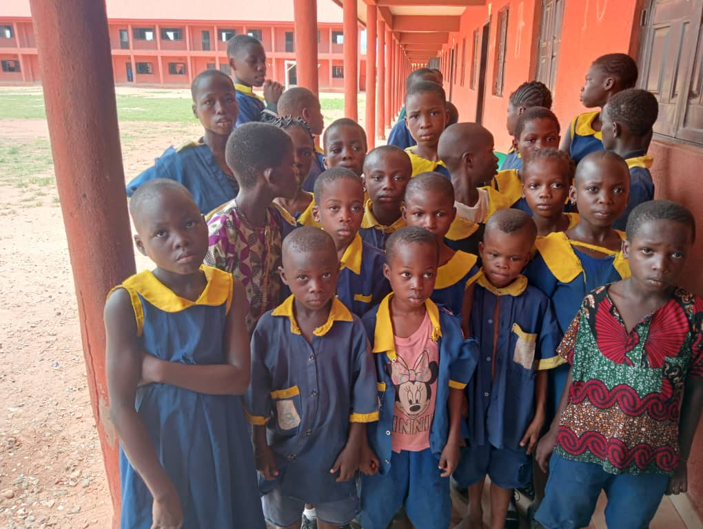
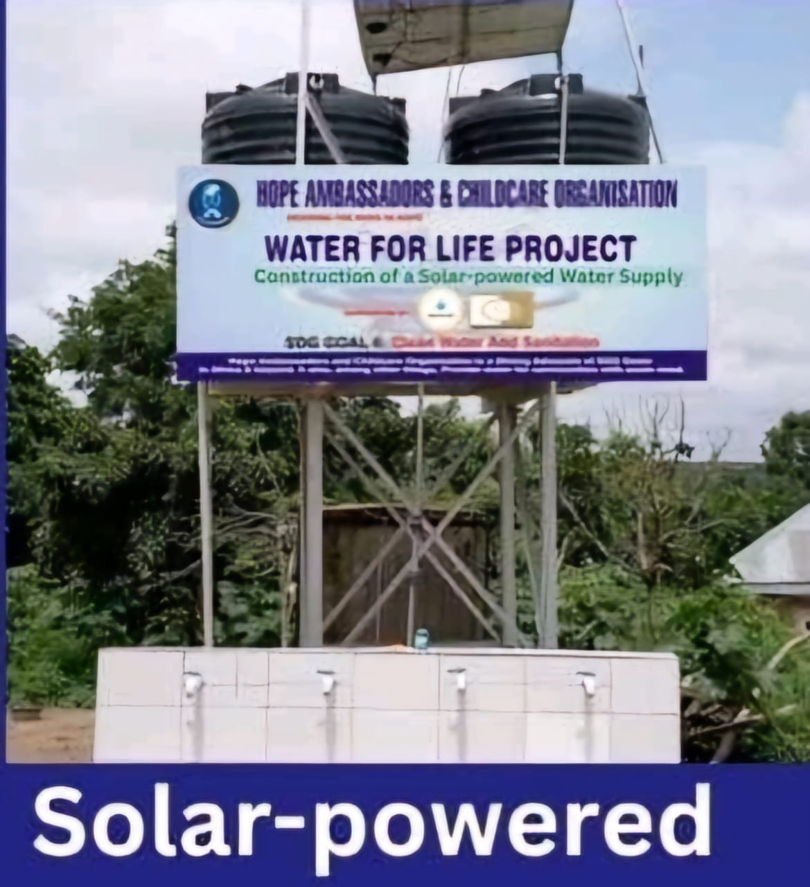

Education
Uniforms and sandals for school children
We provide well-sewn uniforms and sturdy sandals to children in underserved communities, removing barriers to attendance and restoring confidence in the classroom.
What we do
Community-led programmes that protect dignity, widen opportunity and meet basic human needs.

Education
We provide well-sewn uniforms and sturdy sandals to children in underserved communities, removing barriers to attendance and restoring confidence in the classroom.

Clean water
With Hope Ambassadors & Childcare Organisation, we support boreholes and water systems so children can arrive at school healthy, clean and ready to learn.
Small-business support and practical skills help women strengthen household income and move toward lasting financial independence.
Language learning and community guidance help immigrant women communicate confidently and participate fully in life in Spain.
Food, household items and emergency support reach families experiencing hardship and recovery challenges.
Health checks, maternal supplies, medicines, hospital bills and urgent care support protect vulnerable women and children.